Real Estate AI
Classical ML models as tools for an LLM agentBir LLM ajanı için araç olarak klasik ML modelleri
*four models behind one chat interface (Akbank ML bootcamp)**tek bir sohbet arayüzünün arkasında dört model (Akbank ML bootcamp)*I trained four models on Istanbul housing data and put them behind a LangChain tool-calling agent on Qwen2.5. Users ask questions in natural language, and programs call the same models through five REST endpoints. The price model reaches R² = 0.81.
İstanbul konut verisi üzerinde dört model eğittim ve onları Qwen2.5 üzerinde çalışan bir LangChain tool-calling ajanının arkasına koydum. Kullanıcılar doğal dilde soru sorar, programlar aynı modelleri beş REST endpoint ile çağırır. Fiyat modeli R² = 0,81'e ulaşır.
- stackteknoloji
- scikit-learn · XGBoost · LangChain · Ollama (Qwen2.5) · FastAPI · Streamlit · Docker Compose
1. The problem1. Problem
Classical ML models give good answers, but a normal user cannot call them easily. This project puts four models behind a LangChain agent. The user asks a question in natural language, and the agent calls the correct model. Programs can call the same models through REST.
Klasik ML modelleri iyi cevaplar verir, ancak normal bir kullanıcı onları kolayca çağıramaz. Bu proje dört modeli bir LangChain ajanının arkasına koyar. Kullanıcı doğal dilde bir soru sorar ve ajan doğru modeli çağırır. Programlar aynı modelleri REST ile çağırabilir.
2. Architecture2. Mimari

The Streamlit UI calls FastAPI. FastAPI has five REST endpoints for direct model queries and one streaming endpoint for the chat. The agent runs on Qwen2.5 through Ollama and uses five tools.
Streamlit arayüzü FastAPI'yi çağırır. FastAPI'de doğrudan model sorguları için beş REST endpoint ve sohbet için bir akış endpoint'i vardır. Ajan, Ollama üzerinden Qwen2.5 ile çalışır ve beş araç kullanır.
3. Model selection3. Model seçimi

- Price: I compared 7 regressors on R² and training time. XGBoost gave the best balance.
RandomizedSearchCVtuned it to R² = 0.81. - Anomalies: Isolation Forest needs no labels. With
contamination=0.01, it flagged 95 of 9,940 listings. - Home type: KMeans had a higher silhouette score than Agglomerative Clustering. The elbow method gave k = 5.
- Investment: I compared 8 classifiers on F1. RidgeClassifier with α = 0.1 gave the best balance of speed and accuracy.
- Fiyat: 7 regresörü R² ve eğitim süresine göre karşılaştırdım. XGBoost en iyi dengeyi verdi.
RandomizedSearchCVonu R² = 0,81'e ayarladı. - Anomaliler: Isolation Forest etiket gerektirmez.
contamination=0.01ile 9.940 ilandan 95'ini işaretledi. - Konut tipi: KMeans, Agglomerative Clustering'den daha yüksek silhouette skoru verdi. Elbow yöntemi k = 5 verdi.
- Yatırım: 8 sınıflandırıcıyı F1'e göre karşılaştırdım. α = 0,1 ile RidgeClassifier en iyi hız ve doğruluk dengesini verdi.
4. Key decisions and trade-offs4. Kilit kararlar ve trade-off'lar
| DecisionKarar | Alternative I consideredDeğerlendirdiğim alternatif | ReasonGerekçe |
|---|---|---|
| Models as agent toolsAjan aracı olarak modeller | One UI form for each modelHer model için bir arayüz formu | The user asks one question. The agent selects the correct model.Kullanıcı tek bir soru sorar. Ajan doğru modeli seçer. |
| REST endpoints next to the chatSohbetin yanında REST endpoint'leri | Chat onlyYalnızca sohbet | Programs need deterministic answers without an LLM in the path.Programlar, yolda LLM olmadan deterministik cevaplara ihtiyaç duyar. |
| Two investment classesİki yatırım sınıfı | Three original classesÜç orijinal sınıf | The class "Not suitable" had only 12 records. A model cannot learn this class."Uygun değil" sınıfında yalnızca 12 kayıt vardı. Bir model bu sınıfı öğrenemez. |
The investment classifier has F1 ≈ 0.61. The labels limit this score. The class "Unknown" contains suitable listings without clean labels, so a different algorithm does not fix the problem.
Yatırım sınıflandırıcısının F1 değeri yaklaşık 0,61'dir. Bu skoru etiketler sınırlar. "Bilinmiyor" sınıfı, temiz etiketi olmayan uygun ilanlar içerir; bu yüzden farklı bir algoritma sorunu çözmez.

5. Results5. Sonuçlar
6. Limitations and next steps6. Sınırlamalar ve sonraki adımlar
- The chat memory is one session for the whole process. It is not safe for many users at the same time.
- The data comes from a static CSV file. A data-ingestion API and more cities are the next steps.
- Sohbet hafızası tüm süreç için tek bir oturumdur. Aynı anda çok sayıda kullanıcı için güvenli değildir.
- Veri statik bir CSV dosyasından gelir. Bir veri alım API'si ve daha fazla şehir sonraki adımlardır.
7. Design Q&A7. Tasarım Soru-Cevap
Why use an agent instead of a normal API?Neden normal bir API yerine ajan kullandın?
A user does not know which model answers a question. The agent selects the tool. The REST API stays available for programs that need a direct call.
Kullanıcı bir soruyu hangi modelin cevapladığını bilmez. Ajan aracı seçer. REST API, doğrudan çağrı gerektiren programlar için kullanılabilir kalır.
Why is the investment F1 score low?Yatırım F1 skoru neden düşük?
The class "Unknown" contains suitable listings without clean labels. I joined it with "Not suitable" into "Risky". This label noise limits the score more than the algorithm does.
"Bilinmiyor" sınıfı, temiz etiketi olmayan uygun ilanlar içerir. Onu "Uygun değil" sınıfıyla "Riskli" altında birleştirdim. Bu etiket gürültüsü skoru algoritmadan daha fazla sınırlar.
Why does XGBoost have a high MAE with R² = 0.81?R² = 0,81 iken XGBoost'un MAE değeri neden yüksek?
R² measures explained variance. Some listings have prices that are much higher than the median. These listings give large absolute errors. The price distribution has outliers and imbalance.
R² açıklanan varyansı ölçer. Az sayıda çok pahalı ilan büyük mutlak hatalar verir. Fiyat dağılımında aykırı değerler ve dengesizlik vardır.